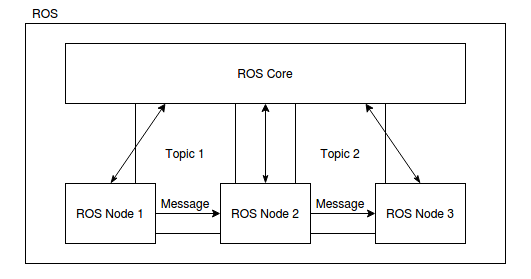
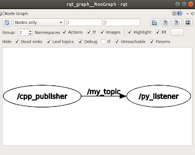

Robotic Operating System
Název "Robot Operating System" poněkud klame svým zněním. Nejedná se o samostaný operační sýstém, nýbrž spíše o middle-ware, tedy softwarový nástroj (knihovnu), který pomáha propojit dílčí programy do komplexnejšího celku. V praxi si to můžem představit tak, že máme jednoduchou aplikaci pro robota jezdícího po čáre, kterou realizujeme pomoci 3 navzájem spolupracujících programů (příklad funguje jako ilustrační; takového robota samozřejmě můžeme naprogramovat pomocí jednoho programu; ilustrujeme tím ale komplexnější problém). První program vyčítá data ze snímače a provádí jednoduchou filtraci dat. Druhý program je mozkem celého řešení a rozhoduje o pohybu robota. Třetí program pak přijímá řídicí pokyny a na jejich základě ovládá motory.

Obr: Schéma fungování pomyslého line-tracking robota na platformě Rapserry Pi s pouřitím ROSu.
V případě absence ROSu bychom museli vymyslet způsob jak tyto tři programy spolu budou komunikovat. Mohli bychom sdílet paměť, pipovat, posílat si IP zprávy, používat DBus, etc. Všechny tyto techniky fungují, ale vyžadují určitý programátorský um. My se těmito nízkouúrovňovými problémy nechceme zabývat a proto použijeme ROS.
V praxi si pak můžeme říct, že ROS komunikuje mezi procesy právě pomocí posílání UDP paketů. To umožňuje také komunikovat procesům, které běží na různých počítačích. Tomu říkáme distribuovaný systém.
Celý ROS je postaven na 4 stavebních kamenech.
- ROS Core
- ROS Node
- ROS Topic
- ROS Message
ROS Core - Zjednodušeně řečeno se jedná o IP server, který zajištujě propojení programů (Nodů), které si chtějí vyměnovat data (Message) . Core nativně otevře port 11311 na localhostu a čeká na příchozí komunikaci.
ROS Node - Nodem je myšlený každý program do kterého přídáme klinetskou knihovnu ROSu. Naučíme tedy program používat funkce ROSu.
ROS Topic - Doména, ve které se posílá specifický okruh ROS Messagů.
ROS Message - Jedna instance odeslané zprávy. V rámci ROSu je možné posílat jenom zprávy, které jsou striktně zadefinovány a mají svůj jasně daný formát. Často obsahují také časovou značku, kdy byly odeslány.
Dále si zadefinujme dva typy postavení ROS Nodů při komunikaci.
Subscriber - ROS Node, který přijímá všechny zprávy v rámci daného ROS Topicku.
Publisher - ROS Node, který vytváří a odesíla zprávy v rámci daného ROS Topicku.
Náš robot-sledující-čáru příklad si pak můžem ilustrovat takto:

Nejprve zapneme ROS Core, tedy server, který začte poslouchat příchozí komunikaci. Dále si napíšeme zmíněne 3 programy. Jeden pro čtení dat ze snímače, druhý pro rozhodování, jak se pohybovat a třetí pro ovládání motorů. První program (Node) se přihlásí k serveru, jako publisher pro topick "SensorData". Druhý se přihlásí serveru, jako subscriber v tomtéž topicku. Server si tyto dva nody poznamená a publisherovi odešle informaci, že je v sídi na dané adrese a portu připravený subscriber, který si vyžádal data z topicku, který oba nody sdílí. Když pak první program přečte data ze snímače, vyfiltruje je a vytvoří z nich message, kterou pošle na dříve obdrženou adresu a port, aby data obdržel subscriber. Obdobným způsobem se vymění data i mezi druhým a třetím programem, pouze pod hlavičkou jiného topicku.
Nyní máme vytvořené všechny tři programy. Ty spolu komunikují, ale robot přesto nefunguje podle přestav. Tušíme, že chyba je v tom, jak druhý program převádí data ze snímače na pohyb kol. Proto si napíšeme 4. program, který bude poslouchat veškerou komunikaci a bude ji logovat do souboru. Náš nový program tedy bude subscriberem pro oba dříve zavedené topicky "SensorData" a "MotorControl". V okamžiku kdy tento program zapneme, tak se ohlásí serveru a od tohoto okamžiku všechny zprávy odeslané v topicích "SensorData" a "MotorControl" budo poslány také našemu logovcímu programu. Ten zprávy přijíme a jejich obsach včetně časové značky vytiskne do souboru. Když se pak do souboru podíváme, zjistíme, že plánovací program vatváří akční zásah vždy s opačným znaménkem, proto přídáme "-" do výpočtu akčního zásahu a vše začne fungovat.
Instalace ROSu
Tento návod je pouze českým přepisem oficiální dokumentace (Instalace pro Ubuntu)[http://wiki.ros.org/noetic/Installation/Ubuntu]. Prim8rn2 prosím používejte oficiální verzi. Tento návod je pouze doprovodný.
Instalace je doporučená na distribuci Ubuntu 20.04 LTS (long term stable). Instalovat budeme verzi ROSu z roku 2020, Noetic.
Přidáme do Linuxu repozitáře (servery) ze kterých je možné stáhnout ROS.
sudo sh -c 'echo "deb http://packages.ros.org/ros/ubuntu $(lsb_release -sc) main" > /etc/apt/sources.list.d/ros-latest.list'
Přidáme do systému klíč pro zabezpečenou komunikace s repozitářem.
sudo apt-key adv --keyserver 'hkp://keyserver.ubuntu.com:80' --recv-key C1CF6E31E6BADE8868B172B4F42ED6FBAB17C654
Necháme baličkovací systém načíst nově přidaná data.
sudo apt update
Samotný ROS nainstalujeme příkazem. Trvá cca 10 min.
sudo apt install ros-noetic-desktop-full
A na závěr si do souboru ~/.bashrc přídáme záznam o náčítání ROSu do proměnného prostředí, kdykoliv zapneme terminál.
echo "source /opt/ros/noetic/setup.bash" >> ~/.bashrc
source ~/.bashrc
Tvorba vlastního nodu
Vytvoříme si jednoduchou aplikaci, kte jeden node bude odesílat zprávu s pořadovým číslem a časovou značkou a druhý node zprávu přijíme, vypíše a zjisti, s jakým zpožděním zpráva došla.
Nejprve si vytvoříme tzv workspace pro náš projekt. Workspacem se myslí speciálně uspořádaná složka.
cd ~/
mkdir ros_ws
cd ros_ws
mkdir src
cd src
C++ Node
Dále si pomocí catkinu (balíčkovací nástroj pro ROS) necháme vztgenerovat nový balíček (package).
catkin_create_pkg cpp_publisher std_msgs roscpp
Příkaz nám říká, že budeme volat program catkin_create_pkg a chceme po něm, aby nám vytvořil balíček cpp_publisher a připojil k němu knihovny std_msgs, která obsahuje základní sadu ROS zpráv a taktéž knihovnu roscpp, což je základní knihovana pro implementaci ROS Nodu v C++.
Nyní se náš balíček skládá z několika následujícíh souborů
~/ros_ws/src/cpp_publisher/
include/
src/
CMakeLists.txt
package.xml
Do adresářů include a src budeme ukládat naše zdrojové kódy a soubory CMakeLists.txt a package.xml slouží ke kompilaci balíčku.
CMakeLists.txt a package.xml obsahují velké množství předpřipravených direktiv, které slouží složitějším příkladům. Pro naše potřeby si můžeme tyto dva soubory smazat.
cd ~/ros_ws/src/cpp_publisher/
rm CMakeLists.txt
rm package.xml
Pomocí programu nano, nebo vim si oba soubory znovu vytvoříme tak a přidáme následující obsah.
nano CMakeLists.txt
cmake_minimum_required(VERSION 2.8.3)
project(cpp_publisher)
## Find catkin and any catkin packages
find_package(catkin REQUIRED COMPONENTS roscpp std_msgs)
## Declare a catkin package
catkin_package()
## Build talker and listener
include_directories(include ${catkin_INCLUDE_DIRS})
add_executable(cpp_publisher src/main.cpp)
target_link_libraries(cpp_publisher ${catkin_LIBRARIES})
a
nano package.xml
<?xml version="1.0"?>
<package format="2">
<name>cpp_publisher</name>
<version>0.0.0</version>
<description>The cpp_publisher package</description>
<maintainer email="my@email.todo">adash</maintainer>
<license>TODO</license>
<buildtool_depend>catkin</buildtool_depend>
<build_depend>roscpp</build_depend>
<build_depend>std_msgs</build_depend>
<build_export_depend>roscpp</build_export_depend>
<build_export_depend>std_msgs</build_export_depend>
<exec_depend>roscpp</exec_depend>
<exec_depend>std_msgs</exec_depend>
<export>
</export>
</package>
Nyní si můžeme vytvořit soubor main.cpp ve složce src a do něj napíšeme vlastní program
nano src/main.cpp
#include <sstream>
#include "ros/ros.h"
#include "std_msgs/Header.h"
int main(int argc, char **argv) {
ros::init(argc, argv, "cpp_publisher");
ros::NodeHandle n;
ros::Publisher publisher = n.advertise<std_msgs::Header>("/my_topic", 1);
ros::Rate loop_rate(10);
int count = 0;
while (ros::ok()) {
std_msgs::Header msg;
msg.stamp = ros::Time::now();
msg.seq = count++;
msg.frame_id = "origin";
publisher.publish(msg);
ros::spinOnce();
loop_rate.sleep();
}
return 0;
}
Nyní se vrátíme do kořene našeho workspacu a zavoláme příkaz pro build celého workspacu.
cd ~/ros_ws
catkin_make
Pokud se nevypíše žádná chyba, máme hotový publisher, který je uložený v ~/ros_ws/devel/lib/cpp_publisher.
Aby si Linux načetl nově zkompilované programy z našeho ros_ws přidámi si tento workspace do systémového prostředí (environmentu).
source ~/ros_ws/devel/setup.bash
Abychom tuto akci již nemuseli opakovat přidáme si tento řádek také do ~/.bashrc
echo "source ~/ros_ws/devel/setup.bash" >> ~/.bashrc
Nyní si otevřeme další 2 terminály tak, abychom celkem měli 3 okna terminálu. V jednom aktivujeme roscore
roscore
Ve druhém námi vytvořený publisher.
rosrun cpp_publisher cpp_publisher
A ve třetím si poslechneme zprávy na topicku /my_topic
rostopic echo /my_topic
Pokud vidíte v terminále výpis zpráv, vše pracuje, jak má.
Python Node
Vytvoříme si další balíček pomocí
cd ~/ros_ws/src/
catkin_create_pkg python_subscriber std_msgs rospy
a upravíme si strukturu balíčku tak, aby vypadala následovně.
~/ros_ws/src/python_subscriber/
bin/
python_subscriber.py
include/
src/
setup.py
CMakeLists.txt
package.xml
Složka bin bude soužit k uložení hlavního skriptu python_subscriber.py, include a src pro další zdrojové kódy, které ale dneska nevyužijeme a CMakeLists.txt a package.xml obdobně jako pro C++ příklad. setup.py slouží k instalaci pythoniho balíčku do workspacu.
Zmíněné soubory si pak upravíme následovně.
cmake_minimum_required(VERSION 2.8.3)
project(python_subscriber)
find_package(catkin REQUIRED COMPONENTS
rospy
std_msgs
)
catkin_package()
catkin_python_setup()
dále
nano package.xml
<?xml version="1.0"?>
<package format="2">
<name>python_subscriber</name>
<version>0.0.0</version>
<description>The python_subscriber package</description>
<maintainer email="my@email.todo">adash</maintainer>
<license>TODO</license>
<buildtool_depend>catkin</buildtool_depend>
<build_depend>rospy</build_depend>
<build_depend>std_msgs</build_depend>
<build_export_depend>rospy</build_export_depend>
<build_export_depend>std_msgs</build_export_depend>
<exec_depend>rospy</exec_depend>
<exec_depend>std_msgs</exec_depend>
<export>
</export>
</package>
pak
nano setup.py
## ! DO NOT MANUALLY INVOKE THIS setup.py, USE CATKIN INSTEAD
from distutils.core import setup
from catkin_pkg.python_setup import generate_distutils_setup
# fetch values from package.xml
setup_args = generate_distutils_setup(
packages=['python_subscriber'],
package_dir={'': 'src'},
)
setup(**setup_args)
a finálně
nano python_subscriber.py
#!/usr/bin/env python
import rospy
from std_msgs.msg import Header
def callback(message):
now = rospy.Time.now()
delta_t = (now.secs - message.stamp.secs)*1000000000 + (now.nsecs - message.stamp.nsecs)
print('seq: ' + str(message.seq))
print('frame id: ' + message.frame_id)
print('send time: ' + str(message.stamp.secs) + '.' + str(message.stamp.nsecs).zfill(9) + 's')
print('receive time: ' + str(now.secs) + '.' + str(now.nsecs).zfill(9) + 's')
print('delay [ns]: ' + str(delta_t))
print(30*'*')
def listener():
rospy.init_node('listener', anonymous=True)
rospy.Subscriber("/my_topic", Header, callback)
# spin() simply keeps python from exiting until this node is stopped
rospy.spin()
if __name__ == '__main__':
listener()
a přídáme souboru python_subscriber.py flag pro spouštění, aby bylo možné zapnout skript.
chmod +x ~/ros_ws/src/python_subscriber/bin/python_subscriber.py
Nyní se můžeme vrátit do kořene workspacu a vše ykompilovat.
cd ~/ros_ws/
catkin_make
Zaktualizujeme si proměné prostředí.
source ~/ros_ws/devel/setup.bash
Pokud máme aktivní roscore i cpp_publisher, pak zampene node pomocí
rosrun python_subscriber python_subscriber
a vidíme výpis přijímaných zpráv.
Pomocí programu rqt_graph si můžeme prohlédnout aktuální stav propojení nodů.
rosrun rqt_graph rqt_graph

Obr: vizualizace komunikace mezi nody pomocí rqt_graph
Rviz
Rviz je vizualizační nástroj, který je dodáván jako součást ROSu. Jedná se o aplikaci, která dokáže poslouchat širokou paletu předdefinovaných ROS zpráv a vizualizovat je v 3D grafickém prostředí.
Obvzkle Rviz používáme pro vizualizaci pointcloudů (mrařna bodů z LIDARu), obrázků z kamery, vykreslování geometrických primitiv v prostoru, vizualizace occupancy grid map, atd.
Pokud nám již běži roscore, rviz aktivujeme pomocí
rosrun rviz rviz
Vizualizaci konkrétního topicku pak aktivujeme pomocí
Add -> By topic -> [náš topick]
V sekci
Add -> By display type
vidíme všechny podporované typy zpráv (viz online dokumentace ROSu).
 Obr: příklad vizualizace pointcloudu a kamery v Rvizu
Obr: příklad vizualizace pointcloudu a kamery v Rvizu
Nyní si skusme vytvořit vlastní Node, který bude vykreslovat geometrické primitivum do RVizu. Vyjděme z příkladu cpp_ros_publishera a vytvořné následujicí program.
cd ~/ros_ws/src
catkin_create_pkg cpp_rviz_publisher std_msgs visualization_msgs roscpp
CMakeLists.txt
cmake_minimum_required(VERSION 2.8.3)
project(cpp_rviz_publisher)
## Find catkin and any catkin packages
find_package(catkin REQUIRED COMPONENTS roscpp std_msgs visualization_msgs)
## Declare a catkin package
catkin_package()
## Build talker and listener
include_directories(include ${catkin_INCLUDE_DIRS})
add_executable(cpp_rviz_publisher src/main.cpp)
target_link_libraries(cpp_rviz_publisher ${catkin_LIBRARIES})
package.xml
<?xml version="1.0"?>
<package format="2">
<name>cpp_rviz_publisher</name>
<version>0.0.0</version>
<description>The cpp_rviz_publisher package</description>
<maintainer email="my@email.todo">adash</maintainer>
<license>TODO</license>
<buildtool_depend>catkin</buildtool_depend>
<build_depend>roscpp</build_depend>
<build_depend>std_msgs</build_depend>
<build_depend>visualization_msgs</build_depend>
<build_export_depend>roscpp</build_export_depend>
<build_export_depend>std_msgs</build_export_depend>
<build_export_depend>visualization_msgs</build_export_depend>
<exec_depend>roscpp</exec_depend>
<exec_depend>std_msgs</exec_depend>
<exec_depend>visualization_msgs</exec_depend>
<export>
</export>
</package>
src/main.cpp
#include <sstream>
#include <ros/ros.h>
#include <visualization_msgs/Marker.h>
visualization_msgs::Marker createCuteCube(float pose) {
visualization_msgs::Marker marker;
marker.header.frame_id = "map";
marker.header.stamp = ros::Time();
marker.ns = "cube";
marker.id = 0;
marker.type = visualization_msgs::Marker::CUBE;
marker.action = visualization_msgs::Marker::ADD;
marker.pose.position.x = sin(pose);
marker.pose.position.y = cos(pose);
marker.pose.position.z = 0.1*sin(5*pose);
marker.pose.orientation.x = 0.0;
marker.pose.orientation.y = 0.0;
marker.pose.orientation.z = 0.0;
marker.pose.orientation.w = 1.0;
marker.scale.x = 0.1;
marker.scale.y = 0.1;
marker.scale.z = 0.1;
marker.color.a = 1.0;
marker.color.r = 0.0;
marker.color.g = 1.0;
marker.color.b = 0.0;
return marker;
}
int main(int argc, char **argv) {
ros::init(argc, argv, "cpp_rviz_publisher");
ros::NodeHandle n;
ros::Publisher vis_pub = n.advertise<visualization_msgs::Marker>( "/cute_cube", 0 );
ros::Rate loop_rate(100);
float pose = 0;
while (ros::ok()) {
visualization_msgs::Marker cube = createCuteCube(pose);
vis_pub.publish( cube );
pose += 0.01;
ros::spinOnce();
loop_rate.sleep();
}
return 0;
}
V Rvizu si pak otevřeme topic /cute_cube .
Distribuovaný ROS
Tím, že calý backend ROS-ové komunikace je postaven na IP komunikaci (UDP protokolu), je možné snadno komunikaci mezi Nody přenést i na jiné počítače v dostupné síti. Po nainstalování je ROS nakonfigurován tak, že veškerá komunikace s Corem probíha na adrese http://localhost:11311, a Nody si bindují dostupné volné UDP porty a skrze něj komunikují mezi sebou. Pokud ale nastavíme na lokálním stroji proměnnou ROS_MASTER_URI na jinou IP adresu, bude každý nově nastartovaný Node hledat svůj ROS Core na adrese uvedené v ROS_MASTER_URI.
Spojme si 2 počitáče skrze IP síť a ověřme, že na seba navzájem vidí příkazem PING.
ping xxx.yyy.zzz.qqq
Pokud oba počítače na sebe navzájem vidí, můžeme na počítači, kde chceme provozovat ROS Core nastavit proměnné, a aktivovat Core.
export ROS_MASTER_URI=http://localhost:11311
export ROS_IP=<ip_adresa_pocitace>
roscore
Na 2. počítači, kde poběží nody musíme nastavit prostředí tak aby dokázalo najít ROS Core v síti.
export ROS_MASTER_URI=http://<ip_adresa_coru>:<port_coru>
export ROS_IP=<ip_adresa_pocitace>
Ověřit nastavení proměnných můžeme příkazy
echo $ROS_MASTER_URI
echo $ROS_IP
Nyní, pokud aktivujeme publisher a subscriber na libovolném počítači v takto nastavené ROS síti, budou nody spolu komunikovat.
 Obr: příklad konfigurace ROSu na dvou počítačích.
Obr: příklad konfigurace ROSu na dvou počítačích.
Kam dál?
Tento tutoriál je popisuje pouze malý zlomek všech možných funkcionalit této obšírné platformy.
Oficiální web [1] - http://www.ros.org/
Oficiální tutoriály [2] - http://wiki.ros.org/ROS/Tutorials
Naučit se používat ROS Services [6]
Seznamy několika předdefinovaných ROS Messagů - [4] [5]
Pro zdatné ROSáky je možnost se posunout na další kvalitativní level, a totiž ROS 2 [3]. Druhá verze robotického operačního systému je již koncipováná jako real-time middleware s podporou QoS a širokou paletou služeb, které ocení zejména vývojáři sofistikovaných robotických řešení, na která bude kladeny řádově vyžší kvalitativní nároky.
Pro reálnou práci se zdrojovými kódy je vhodné použít nějaké IDE. V případě Linuxu vřele doporučuji programy od JetBrains, CLion pro vývoj C++ a Pycharm pro práci s pythonem. Oba programy jsou pro studenty VUT zdarma.
Reference
[1] http://www.ros.org/
[2] http://wiki.ros.org/ROS/Tutorials
[3] https://github.com/ros2/ros2/wiki
[4] http://wiki.ros.org/std_msgs
[5] http://wiki.ros.org/sensor_msgs
[6] http://wiki.ros.org/Services
[7] https://www.computerhope.com/unix/uchmod.htm
[8] http://wiki.ros.org/ROS/Installation